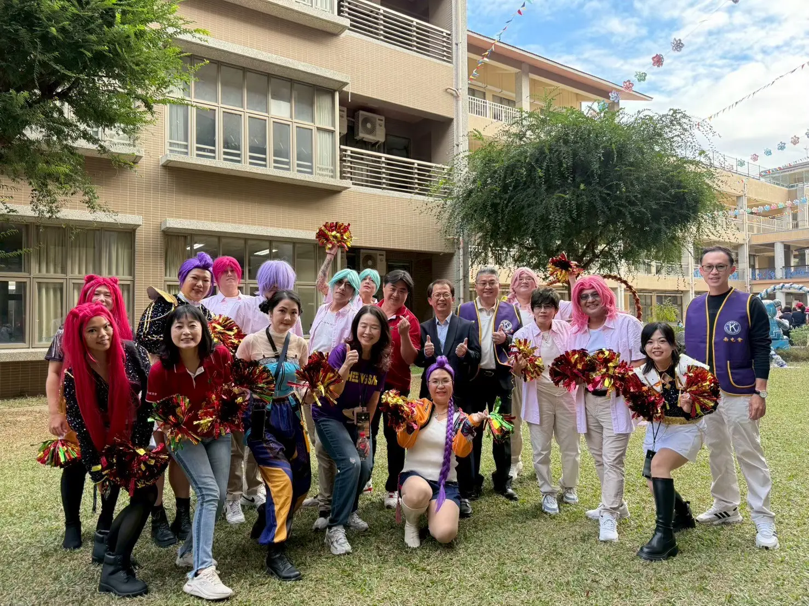
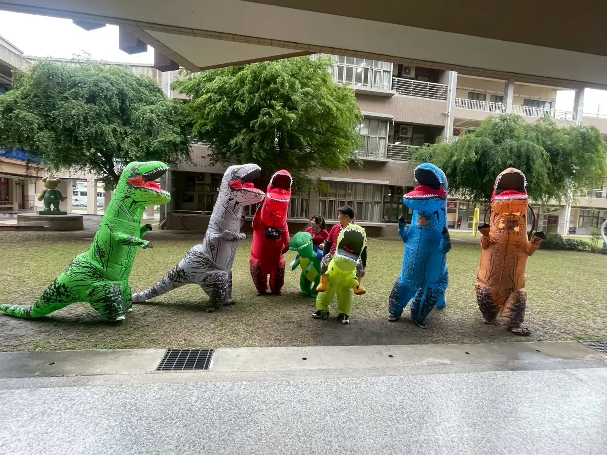
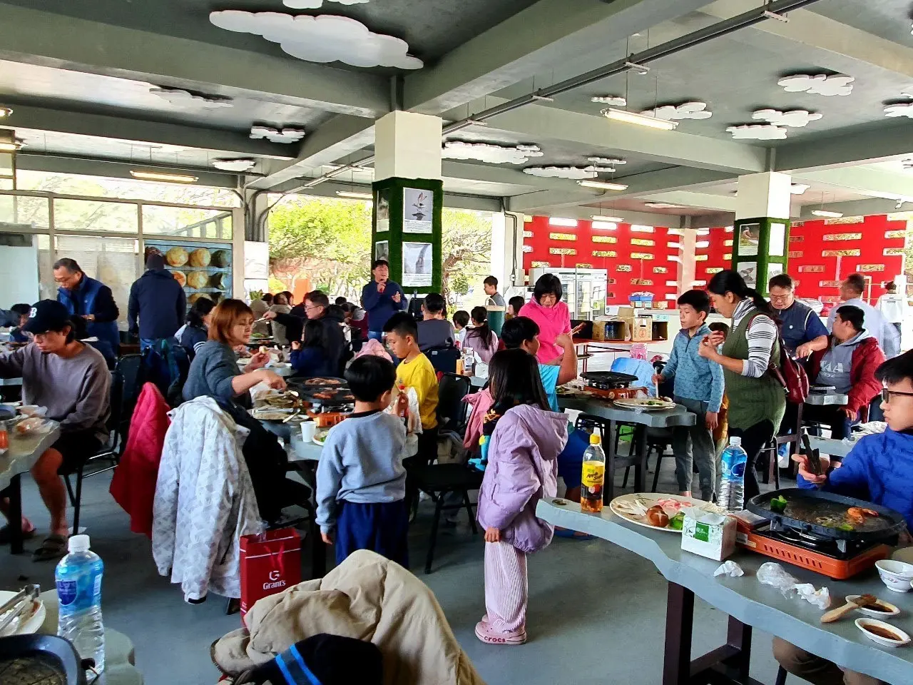
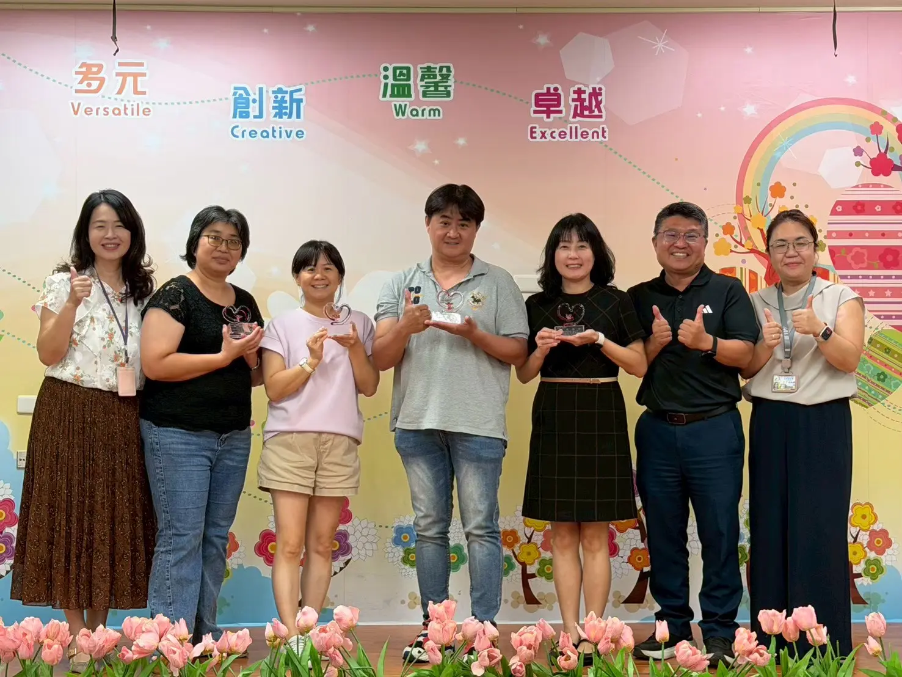

學期初會議
確認本學期的重要方向、活動與需要彼此協力的事項。


家長委員會是家長與校園之間的一座橋。我們關心孩子在學校的生活，也透過實際參與，讓家長的支持成為校園裡溫暖而穩定的力量。
我們沒有繁複的分組，而是依照活動與需要彼此協力；有人提供想法、有人投入時間，每一份參與都很重要。
每一次校園活動，都是孩子成長中的一頁。家委會和學校一起準備、一起參與，也一起收藏那些開心的瞬間。

一起出發
讓關係更靠近
家委會也安排家長出遊與交流活動。離開日常的匆忙，在輕鬆互動中分享生活、交換育兒經驗，也讓家長之間建立更自然的連結。
除了參與活動，家委會也透過不同形式的會議，整理需求、交換意見，讓每一件事更有共識地往前走。

確認本學期的重要方向、活動與需要彼此協力的事項。
針對活動細節與臨時需求，彈性溝通、即時協調。
回顧參與成果、整理經驗，也為下一段校園旅程做好準備。
OUR SHARED JOURNEY
謝謝每一位願意關心、投入與同行的家長。家長委員會會繼續和大家一起，陪伴孩子自在成長。
歡迎所有家長一起參與，如有興趣請向各班導師詢問。